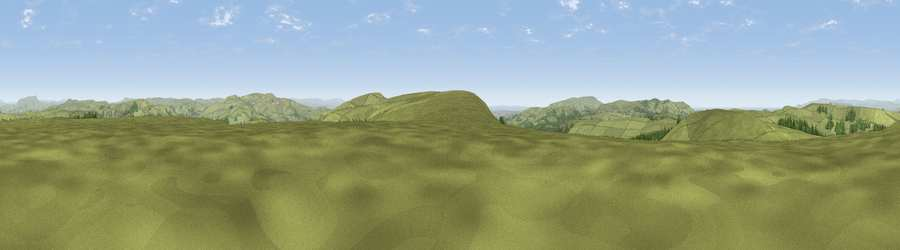

Viewpoint near Helmshore
#12709 in England · top 24% of its area beats it · near HelmshoreWhere it is
The exact computed spot (SD 75325 21125). Click the marker for map links.
The view, rendered

A 360° render of this exact spot computed from the terrain model, tree cover and land cover — summer colours, afternoon light, calibrated against photographs of famous viewpoints. Real trees, hedges and buildings will differ in detail.
The panorama
Grey silhouette: terrain skyline in each direction (720 bearings, Earth curvature and refraction included). Dashed green: skyline with trees (+15 m) and buildings (+8 m) as obstacles. Blue strip: how far the ground is visible on each bearing.
Where the view opens
Wedge length = distance to the farthest visible ground on that bearing (vegetation-aware). Rings at 10, 25 and 50 km.
What fills the view
92% grassland · 6% woodland · 1% built-up
Angular shares of the visible panorama (visual magnitude), not map area. Landscape diversity 0.15 (0–1 Shannon).
Key numbers
More beautiful places nearby
The staircase of upgrades: each row has a higher view potential than everything closer. Driving times are estimates from straight-line distance, calibrated against real road routing — check an actual route before setting out.
| Place | Direction | Drive | Score |
|---|---|---|---|
| Viewpoint near Edgworth | S · 3 km | ~6 min | 67.4 |
| Viewpoint near Holcombe | SSE · 4 km | ~10 min | 70.0 |
| Viewpoint near Hazelhurst | SSE · 5 km | ~12 min | 75.1 |
| Viewpoint near Edenfield | ESE · 7 km | ~15 min | 77.5 |
| Darwen Hill | W · 7 km | ~15 min | 80.7 |
| White Brow | SW · 13 km | ~23 min | 82.9 |
| Warton Crag | NNW · 58 km | ~80 min | 83.2 |
| Viewpoint near Grange-over-Sands | NNW · 67 km | ~91 min | 83.4 |
53.68599, -2.37509 · source: screening · position refined by local search. Computed location — check access rights before visiting.